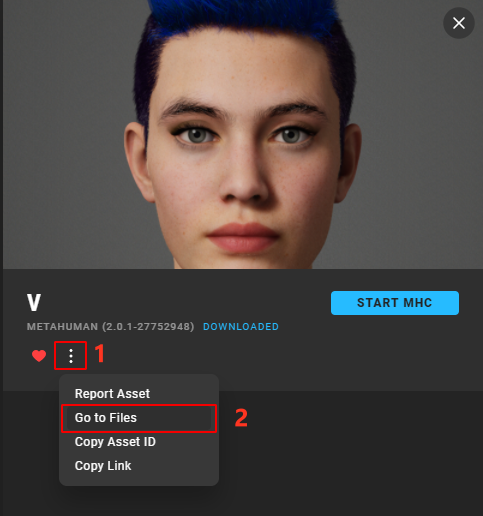

Workflow (1.0)
We’ve designed MetaReForge addon interface to be as clear and structured as possible. All features are organized into blocks within the N-panel under the ‘MRF’ category. The majority of these features are accessible in object mode, while additional utilities for armature editing become available in armature edit mode. Check out out workflow tutorial on youtube
Preliminary Setup
First, we need to prepare the files for editing. You will need:
The head’s FBX file
Content/Metahumans/<METAHUMAN_NAME>/Face/<METAHUMAN_NAME>_FaceMeshright-click on the corresponding skeletal mesh in the content browser Asset Actions - Export as FBX).
Convert FBX with Autodesk FBX 2013 Converter (do not ignore this step cause otherwise some data as for example shape keys will be lost!!)

The body’s FBX file exported in the same way as the head, preferably use a body skeletal mesh that includs all polygons, without any deleted polygons under the clothing.
Content/Metahumans/<NAME>/<SEX>/<HEIGHT>/<WEIGHT>/Body/<BODY_SKELETAL_MESH>
The DNA file. It’s usually found in the Quixel Bridge asset folder. By default, look in
C:\Users\<USER_NAME>\Documents\Megascans Library\Downloaded\UAssets\<ASSET_ID>\Tier0\asset_ue\MetaHumans\<METAHUMAN_NAME>\SourceAssets).

{kind=link}
Scene Setup
The first thing to do when opening a new scene in Blender is to set the units of measurement (this is necessary to match the units in Unreal Engine). The metric system should be selected with a Unit Scale = 0.01. If the units are not set up, the addon panel will display a Setup Scene button, which will configure the units as mentioned earlier.
1. Importing FBX
To import files, use the “FBX Import” block on the N-panel of the addon (Object mode). Specify which body parts you want to import (head, body, or both), indicate the path to the corresponding files, and click “Import FBX”.
Note. It’s not recommended to import FBX files in any other way. The addon removes unnecessary elements, analyzes LODs, and assigns them to the corresponding internal properties (which can be viewed by expanding the “Head Objects” and “Body Objects” drop-down lists). This can’t be done manually.
2. Creating Edit Mesh, Edit Armature, and Other Auxiliary Objects
Once the FBX files are imported, we can proceed to initialize auxiliary and editable objects. For this, we move to the “Edit Shape” block.
To ensure clarity, let’s review the terminology used in the addon:
Final Mesh: A mesh tailored for editing. When editing the entire body, the head and body are joined, and all seams are welded.
Final Armature: An armature created for editing. If the entire body is edited, the head and body skeletons are merged into one, removing all duplicates.
No additional setup is generally required, but two parameters are available:
Weld Distance: Determines the distance (centimeters) at which the vertices of the meshes will be welded.
Keep ShapeKeys: By default, this is turned off to avoid storing shape key data for auxiliary objects and to keep the blend file size manageable.
3. Editing the Mesh
Once the auxiliary objects are initialized, you can start editing the mesh. Blender offers a wide range of editing capabilities, but if you need more, you can export the Final Mesh and edit it in an external editor.
It’s crucial to remember:
The topology and vertex indexing must remain UNCHANGED.
If the mesh was edited in an external editor, you need to assign the edited mesh to the Final Shape - Mesh field.
4. Editing the Armature
After achieving the desired mesh shape, it’s necessary to adjust the skeleton to these changes. The Metahuman skeleton contains about a thousand bones, and editing it manually is tedious and time-consuming. Therefore, our addon includes tools to simplify this routine by transferring the deformation from the final mesh to the skeleton.
To start editing the skeleton, you need to select it and switch to edit mode. If everything is done correctly, you will see the necessary tools in the MRF section on the N-panel. All tools transfer the deformation of the final mesh only to the selected bones, allowing for better control of the process.
Surface Deform: As the name suggests, this method is based on binding bones to surfaces, making it very effective for bones close to the mesh surface. It’s less effective for bones deep inside the mesh, but since most Metahuman bones are near the surface, it’s recommended to start with this method.
Mesh Deform: This option is based on the Mesh Deform modifier and works well for bones deep within the mesh. For some bones that are even a fraction of a millimeter outside the mesh or near seams or openings, this algorithm won’t work at all.
To use the methods mentioned, it’s necessary to initialize a proxy for each method just once. Use “Init Proxy” button. Even if changes are made to the Final Mesh, re-initialization is not required. The proxy is initialized for all bones at once. For Mesh Deform, the proxy initialization can take a significant amount of time, especially if the precision is set to 5 or higher (recommended values are 4 or 5).
After initialization, you can select the desired bones and transfer the deformation by clicking “Fit Selected.”
Particular attention should be paid to:
The bones responsible for eye rotation, unless you want the eyes to pop out when looking sideways. :)
The lip bones. In areas where the polygons of the lower and upper lips are very close or even intersect, the above methods may not yield the desired result. Therefore, manual editing may be required.
5. Applying Changes to Exportable Objects
When the creative part of the work is completed, it’s necessary to transfer all changes to the exportable models. For this, we go to the “Update Original” block. By clicking on the “Synchronize” button, changes from the Final Mesh (more precisely, the difference between the Final Mesh and the Initial Mesh) will be applied to the individual LODs, and the updated position of the bones will also be applied to the original armature objects.
No additional tuning is generally required, but a few parameters are available for dealing with exceptional cases:
Use Noise: Default is True. It introduces a small amount of noise to the vertex positions at the time of binding. The Surface Deform modifier, which this operator is based on, fails to work if the vertex positions are identical. The noise value is usually extremely small, making its visual impact imperceptible, but it’s sufficient for the Surface Deform algorithm to bind successfully.
Min, Max: The minimum and maximum values of the noise in centimeters. These should only be increased if synchronization fails with standard settings. However, I recommend trying to press Synchronize again or several times in case of failure. Due to the random nature of the process, there’s a good chance of achieving a noise configuration that allows smooth synchronization even without changing parameters.
6. Quality Check and Re-Computing Normals
After applying the changes, you can review the results. For convenience, there is a “View” block at the top of the panel, where you can switch between LODs and editable objects. There may be minor imperfections, which can be corrected manually.
It’s important to pay attention to the seam between the head and body and also to the seams along the UV unwrap, as Metahuman actually has mesh splits at the UV seams. If sharp edges are noticeable, normals need to be recalculated, and we have developed a specific function for this.
After clicking on “Re-Compute Split Normals”, the following will occur:
If Align Vertices is enabled, all points that are closer than the Weld Distance will be merged into one position.
Normals will be recalculated as if all seams are welded.
With Weld Distance (in centimeters), you can control this process, but the default value is chosen to work in most cases. With a Weld Distance of more than 0.01, you might start to see points welding together that shouldn’t be.
Remember, excessive Weld Distance can result in unintended merging of points, so it should be used cautiously.
7. Export FBX
Once all LODs look as desired, it’s time to export them for use in Unreal Engine. Based on my experience, I prefer to export LODs separately because this way, you don’t have to spend a lot of time configuring Material Slots in Unreal Engine. Following this logic, we have a utility for exporting. You just need to specify the path and click “Export FBX”. There’s no need to worry about settings, selecting the right objects, etc. Everything will be done for you. As a result, you should see 8 LODs for the head and 4 LODs for the body in the folder, so you can upload these files to Unreal Engine.
8. Update DNA
The Metahuman Animation blueprint heavily relies on the DNA file. Therefore, if you want your custom Metahuman to retain the ability to perform realistic facial animations, updating the DNA file is an ESSENTIAL step. Note: If you don’t see the necessary functionality in the “DNA Update” block, check the Installation Guide.
All you need to do is:
Specify the path to the original DNA file.
Specify the path for saving the updated file.
Click “Armature to DNA”. MetaReForge will record the actual positions of the bones from Blender into the DNA file (Neutral Joint Translations and Rotations, following Epic Games’ terminology).
To assign the updated DNA file to a Metahuman in Unreal Engine, you need to drag and drop it into the Content Browser and select the relevant Skeletal Mesh.
For troubleshooting, check out to our Discord Server.